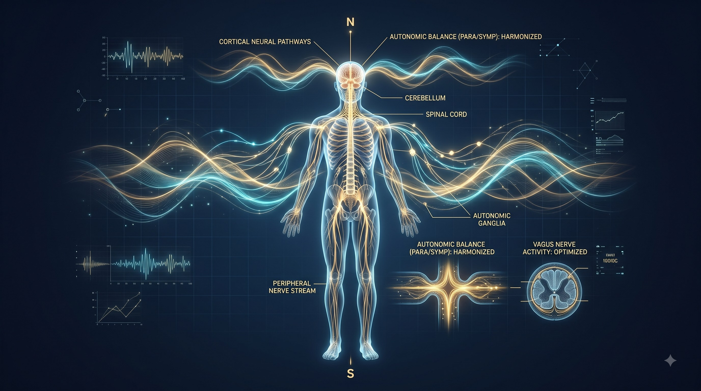
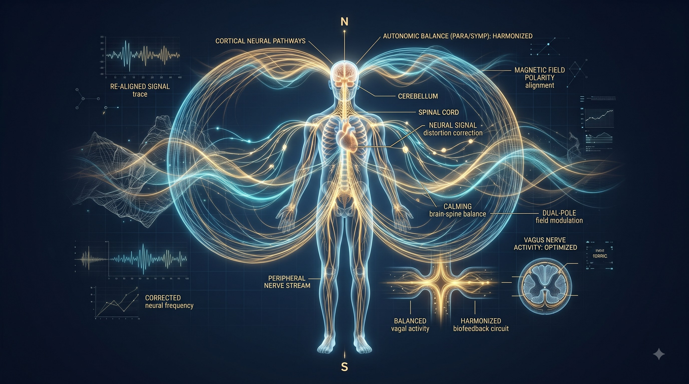
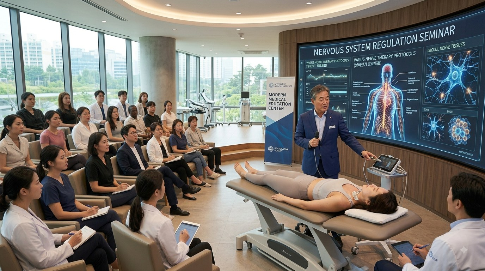

체계적인 적용
신경계 균형 3대 핵심 기전
단순한 진정이 아닌, 3단계 생체 전기 상호 작용을 통해 신경망을 안정화하고 자율신경 조화를 이끕니다.
구조화된 생체 전기 프레임워크를 통해 신경 신호 소통을 재건하고, 자율신경계 조화와 전신 회복 탄력성을 지원합니다.

신경계 불균형은 자율신경계 과부하, 신경 신호 전달 오류, 스트레스 항진 및 신경세포막 전압 저하와 직결되어 있습니다.
노바셀 통치 요법® 프레임워크에서 신경계 지원은 뇌와 전신 장부 사이의 전기적 통신 회로, 생체 극성 균형, 그리고 미주신경(Vagus Nerve)을 통한 부교감신경 활성화를 다루는 것에서 출발합니다.
노바셀 시스템은 실시간 생체 적응형 바이오피드백 기술과 노바셀 극성 정렬 기능, 그리고 단계별 신경 이완 프로토콜을 통합하여 과민해진 신경망을 안정화시킵니다. 일시적인 신경 진통 억제가 아닌 근본적인 자율신경 항상성과 신경계 회복 탄력성을 구축합니다.
신경계는 인체의 모든 감각, 장부 기능, 스트레스 반응 및 수면 리듬을 통제하는 중추 통신망입니다.

지속적인 스트레스나 충격으로 신경 경로의 전압이 방전되면, 뇌와 말초 기관 간의 신호 왜곡이 발생하고 교감신경이 과도하게 항진됩니다. 이는 만성 긴장, 수면 장애, 브레인 포그 및 자율신경 실조 증상으로 나타납니다. 세포막 전위를 복원하고 뒤틀린 생체 극성을 바로잡아 온전한 신경계 항상성을 되찾아줍니다.
단순한 진정이 아닌, 3단계 생체 전기 상호 작용을 통해 신경망을 안정화하고 자율신경 조화를 이끕니다.
박창혁 박사의 노바셀 통치 요법®은 생체 적응형 미세전류와 극성 정렬 기술을 단일 장비에 완벽하게 집약하였습니다.

실시간 바이오피드백 미세전류 기술과 노바셀 극성 정렬 기능을 완벽하게 결합하여, 스트레스 완화, 신경계 이완 및 자율신경 조화를 지원하는 첨단 의료기기입니다.
신경계 불균형은 스트레스, 수면 장애, 근육 경직 등 전신적인 신호 장애로 나타납니다.
만성적인 긴장과 과도한 교감신경 자극을 부드럽게 이완하여 정신적 평온과 안정을 지원합니다.
브레인 포그, 집중력 저하 및 인지적 과부하 부위의 뇌신경 소통과 명료성을 회복합니다.
밤마다 반복되는 뒤척임과 얕은 수면 패턴을 안정시켜 깊고 편안한 숙면을 유도합니다.
신경 신호 긴장으로 인해 경직된 목, 어깨, 척추 주변 근막 회로의 전기적 흐름을 풀어줍니다.
신경계 조절력 상실로 인한 만성 번아웃과 조직 재생 정체 상태를 체계적으로 극복합니다.
미주신경 경로 활성화와 부교감신경 촉진을 통해 심신 전신의 자율신경 항상성을 조화롭게 완성합니다.

노바셀 시스템에서 신경계 관리는 단순한 기기 조작을 넘어 뇌-신경 생체 전기 프로토콜로 체계화되어 있습니다.
기기 사용자 및 전문가를 위해 미주신경 자극법, 척추 신경근 이완 테크닉, 자율신경 안정화 프로토콜이 수록된 ‘노바셀 신경계 관리 가이드’와 전문 교육 프로그램이 제공됩니다.
누구나 쉽고 편안하게 신경계의 평온과 조화를 되찾을 수 있도록 단계별 안내를 제공합니다.
현재 겪고 계신 스트레스, 수면 장애, 신경성 긴장 상태를 면밀히 분석하고 시작점을 설정합니다.
세포막 전압 충전과 극성 정렬이 어떻게 뇌-신경 신호 회로를 정상화하고 이완을 유도하는지 학습합니다.
교육 센터의 안내에 따라 일상 속 일관된 미주신경 및 자율신경 프로토콜을 적용하여 깊은 안정을 유지합니다.